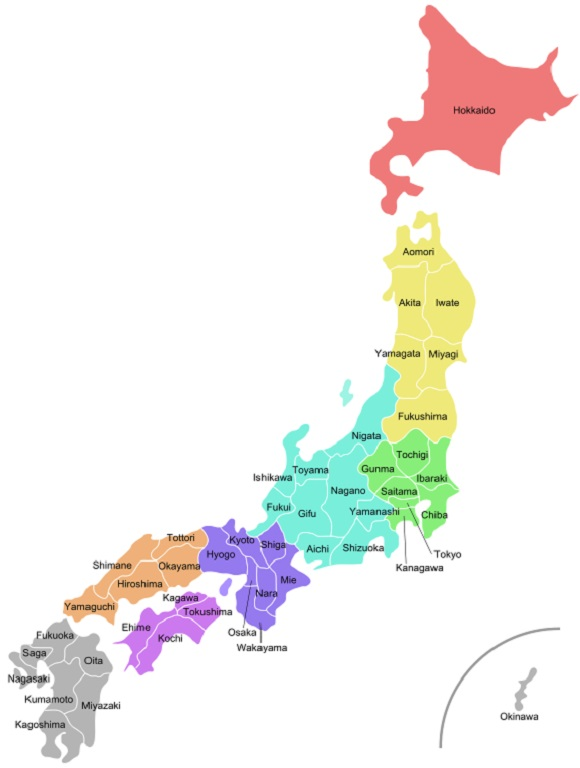

Introdução ao Japonês
O Japonês é a língua nacional do Japão. Em conjunto com outras línguas minoritárias, faz parte da família "Japónica".
Vários dialetos são falados no Japão. A profusão é devida ao terreno montanhoso do arquipélago e à longa história de isolamento interno e externo do país.

O japonês é uma língua aglutinante, com uma fonotática simples, um sistema de vogais puras, vogais fonémicas e comprimento de consoante e um sotaque lexicalmente significativo.
A ordem das palavras é, normalmente, sujeito-objeto-verbo com partículas a marcar a função gramatical das palavras, e a estrutura da frase é tópico-comentário.
São usadas partículas no final das frases para adicionar impacto emocional, ou fazer perguntas.
Os substantivos não têm número gramatical nem género, e não há artigos.
Os verbos são conjugados, principalmente no tempo e na voz, mas não na pessoa. Equivalentes japoneses de adjetivos também são conjugados.
O japonês tem um complexo sistema de construções honoríficas com formas verbais e vocabulário para indicar o status relativo do falante, do ouvinte e das pessoas mencionadas.